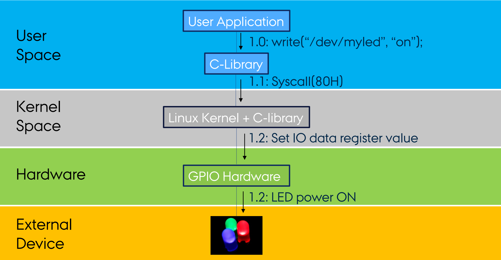

Hardware abstraktur og Linux Kernel
Scroll down or hover over the course to see what topics you can read about
Linux Kernel
Kernel
At arbejde i Kernel, er som at arbejde på motoren i en bil. User interface/UI er rattet, instrumentbrættet og alt hvad en bruger tilgår, men Kernel Interface er som at dykke længere ned i det, og dermed tilgå "motoren". Hermed kan du tilgå "motordele" uden at ændre på brugeroplevelsen ved UI. En illustration over hvor man befinder sig, når man arbejder i Kernel space, kan ses herunder:
Linux Kernel interface bruger C biblioteket. (ikke C++). Du kan bruge nogle specielle kald, til operativ systemet i funktioner som: open(), read(), exec() m.m.
Download Kattens hjælpenoter her
Denne side blev ikke lavet, da jeg ikke kunne finde ud af at læse op til HAL (╥﹏╥)
R.I.P. ISU (╥﹏╥)